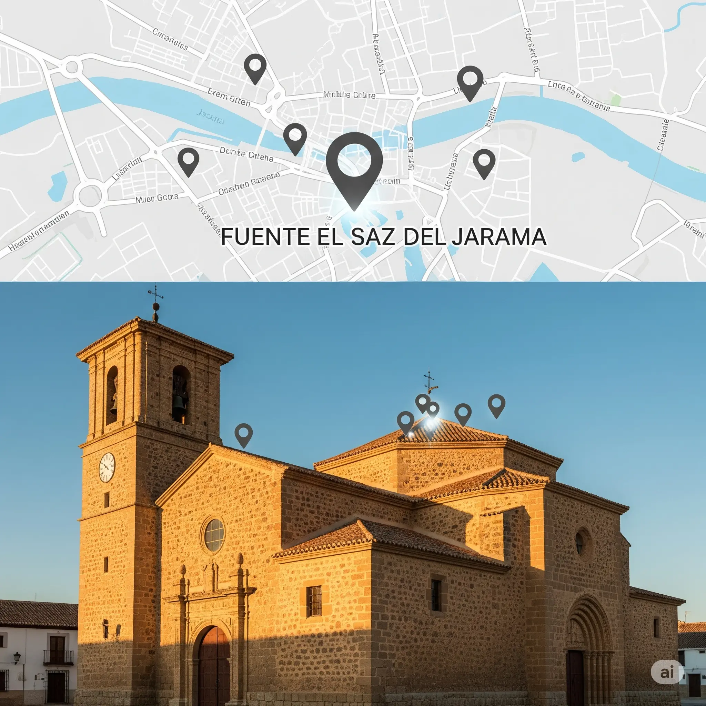

 SEO Local 15 de Agosto, 2025 Aparece Primero en Google Maps: Guía de SEO Local para Negocios en Fuente el Saz Domina los resultados de búsqueda locales y atrae más clientes de Fuente el Saz, Algete y Cobeña directamente a tu puerta. Leer más →